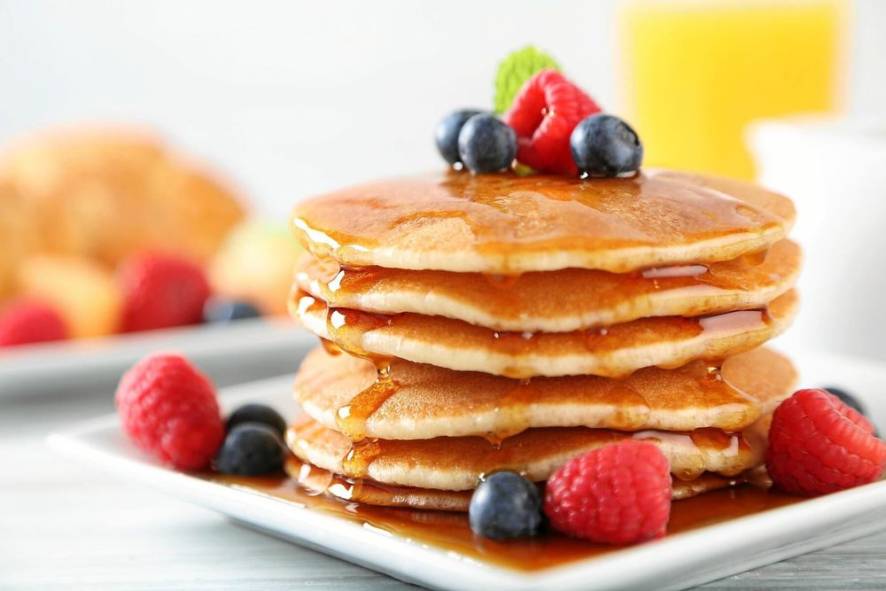
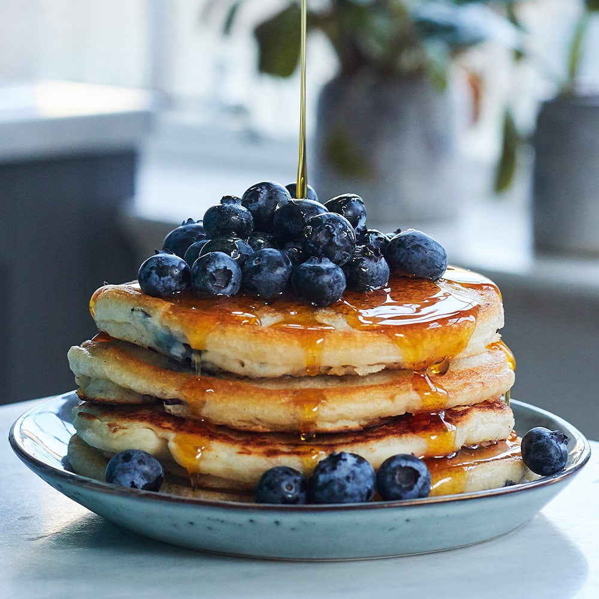

Enkelt recept på amerikanska pannkakor
Ingredienser
För 4 portioner
- 2 1/2 dl vetemjöl
- 1/2 tsk salt
- 3 dl mjölk
- 2 ägg
- 2 tsk bakpulver
- smör (till stekning)
- sylt, bär eller frukt till servering
Såhär gör du
- Blanda mjöl, bakpulver och salt i en bunke.
- Vispa i hälften av mjölken och vispa till en slät smet.
- Vispa i resten av mjölken och äggen.
- Låt smeten vila i ca 10 minuter.
- Stek pannkakor i lite smör, för varje pannkaka, i en stek- eller pannkakspanna.
- Servera med lönnsirap, bär eller frukt.
Serveringsförslag

